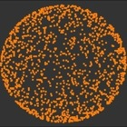
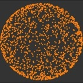

A new page has been made. It allows you to visit all of the data sets from one web page. Visit it here.
The R package is done! It allows you to enter the object through rggobi and not fuss with the codes. Download it fromCRAN with the function install.packages("geozoo") .
Happy visualizing!
Geo Zoo stands for Geometric Zoo. It is a compilation of geometric objects ranging from three dimensions all the way to the 10 dimension. Geo Zoo contains regular or well-known object, eg cube and sphere, and some abstract objects, eg Boy's surface and Hyper-Torus.
Take a look around the site. At the top of each page are the .xml files to each object, corresponding with movies and pictures on the bottom part of the same page.